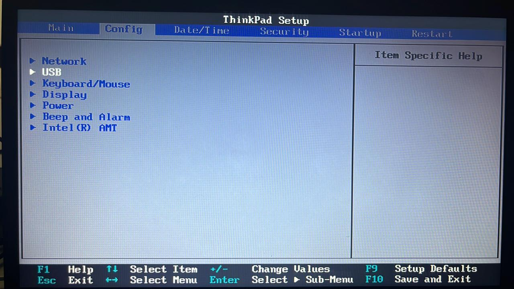
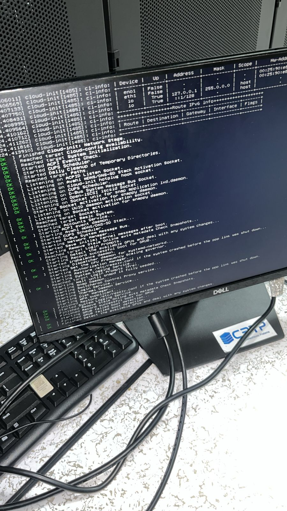

Data singkat
Profil Diri
Tentang Saya
Saya berdomisili di Bekasi dan lahir di Jakarta, 09 Juli 1990. Saya menyukai pekerjaan yang membutuhkan ketelitian, pelayanan, dan kemampuan berkomunikasi langsung dengan orang lain.
Dalam kegiatan sehari-hari, saya berusaha belajar hal baru secara bertahap. Untuk bidang web, saya mulai mengenal struktur HTML, tampilan dengan CSS, dan penggunaan JavaScript sederhana untuk membuat halaman lebih hidup.
Keahlian dan Minat
- Komunikasi dengan pelanggan
- Administrasi dasar dan pencatatan data
- Kerja sama dalam tim
- Belajar dasar pembuatan website
Data Personal
| panduprasetyo18@gmail.com | |
| No. Handphone | 085773988676 |
| Alamat | Jl. Syafiul Ikhwan RT007 RW002 No. 28D, Jati Cempaka, Pondok Gede, Bekasi 17411 |
| Jenis Kelamin | Pria |
| Kewarganegaraan | Indonesia |
| Status | Menikah |
Riwayat
Pendidikan
| Tahun | Sekolah | Keterangan |
|---|---|---|
| 2005 - 2009 | SMA Prima Nusantara, Jakarta | Pendidikan menengah atas |
| 2002 - 2005 | SMPN 109, Jakarta | Pendidikan menengah pertama |
| 1996 - 2002 | SDN 09, Jakarta | Pendidikan dasar |
Catatan kerja
Pengalaman Bekerja
- PT Standard Chartered Bank Tele Marketing, 6 bulan
- PT. Circle Ka Indonesia Utama Customer Service Representative, 15 bulan
- PT. Trans Retail Indonesia Staff Grocery, 7 bulan
- PT. L7 System IT Support, 10 tahun 7 bulan
Dokumentasi Pengalaman di L7 System


Kontak dan tautan
Mari Terhubung
Beberapa tautan berikut bisa digunakan untuk menghubungi saya atau melihat referensi umum terkait lokasi dan pembelajaran web.